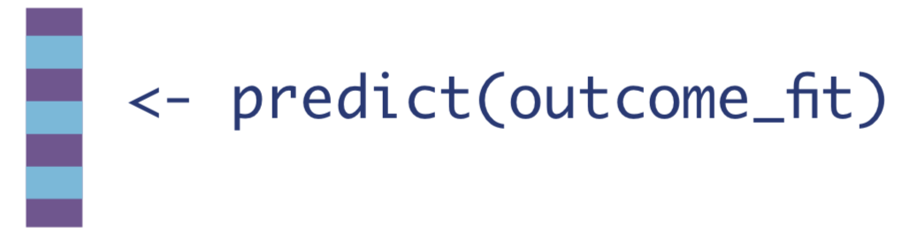
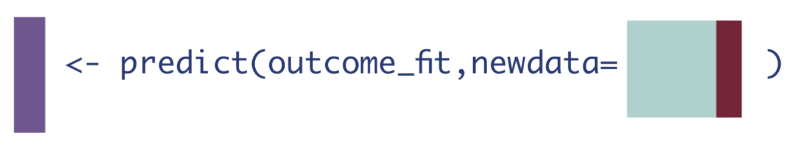
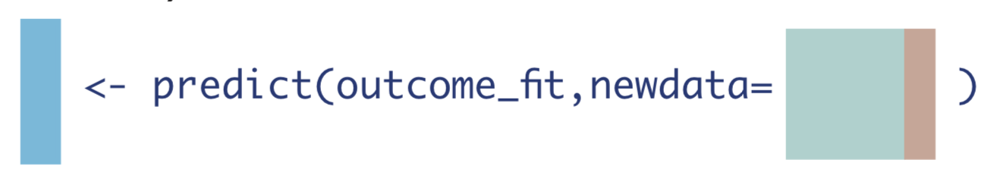
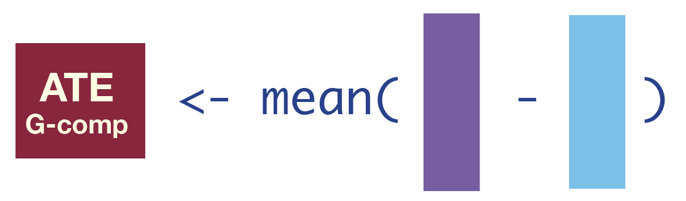
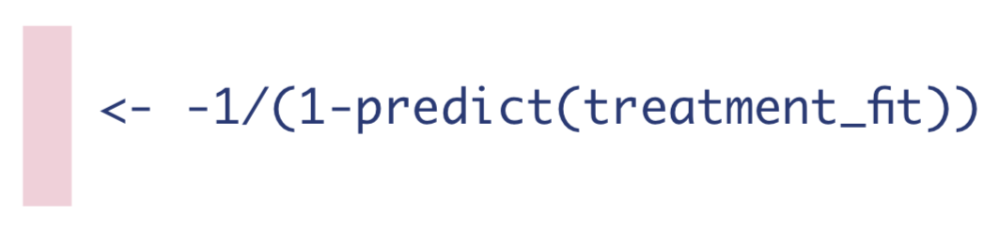
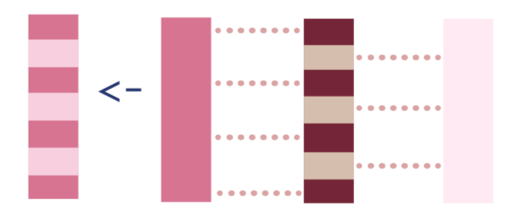
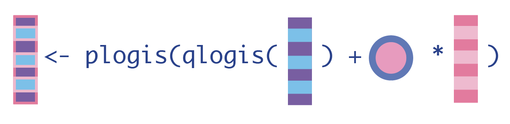
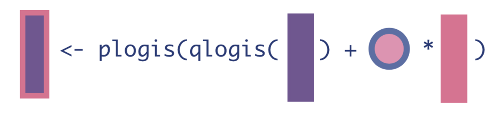
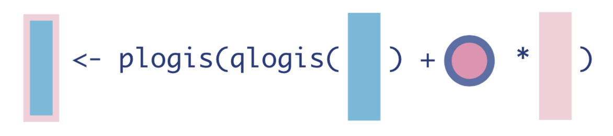
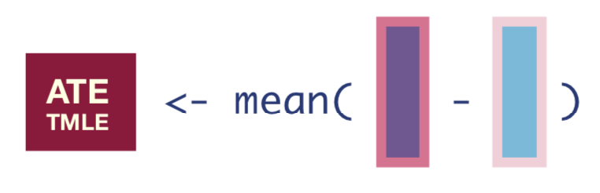

library(tidyverse) # for data manipulation
library(gt) # for table printing
library(SuperLearner) # for ensemble learning
set.seed(7) # for reproducible resultsThe second post of a three-part series to help beginners and/or visual learners understand Targeted Maximum Likelihood Estimation (TMLE). This section walks through the TMLE algorithm for the mean difference in outcomes for a binary treatment and binary outcome.
This post is an expansion of a printable “visual guide” available on my Github. I hope it helps analysts who feel out-of-practice reading mathematical notation follow along with the TMLE algorithm. A web-based key without explanations is also available here.

⬅️Return to Part I: Motivation
Part II: The Algorithm:
➡️Skip to Part III: Evaluation
Why the Visual Guide? 🎨
TMLE was developed in 2007 by Mark van der Laan and colleagues at UC Berkeley, and it is slowly but surely starting to see more widespread use. Since learning about TMLE, I’ve believed many more analysts with a skill set similar to mine could be using TMLE, but perhaps find even the most introductory resources to be a bit daunting.
I am a very applied thinker, and I’ve tried to write this tutorial in the way I would have found most useful and accessible when I began learning about TMLE. Each step is accompanied by:
- a non-rigorous explanation
- an equation using the simplest notation possible
- in-line
Rcode - a small graphic representing the computation on a data frame or vector
This last piece is super important for me, because I remember best when I associate an image with what I’ve learned. If the graphics are also useful to you, it may be helpful to open this corresponding key in another browser or print the visual guide for reference.
This tutorial is not meant to replace the resources I used to learn TMLE, but rather to supplement them. I use the same mathematical notation as the TMLE literature to make it easier to move back and forth. I hope you find the way I think about the algorithm useful, but if not, consider checking out the references I’ve listed in Part III. TMLE is a very powerful method and will undoubtedly only grow in popularity in statistics and data science.
TMLE, Step-by-Step 🚶🏽
Let’s look at the algorithm step-by-step. As you’re reading, keep in mind that there are R packages that will do this for you as easily as running a glm() or coxph() function. This tutorial is to help understand what’s going on behind-the-scenes.
One final note before we dive into the algorithm:
Superlearning
I use the ensemble learning method superlearning (also known as “stacking”) to demonstrate TMLE. This is because superlearning is theoretically and empirically proven to yield the best results in TMLE.
If you’re new to superlearning/stacking, the necessary knowledge for this post is that it allows you to combine many machine learning algorithms for prediction. When I use SuperLearner() in the following example code, I could have used glm(), randomForest(), or any other parametric or non-parametric supervised learning algorithm.

Note that the choice of base learners for superlearning is not the point of this post. In practice we simply want to add flexible machine learning models which we think may reflect the underlying data distribution. For a tutorial on superlearning, you can check out one of my previous blog posts.
Initial set up
Let’s first load the necessary libraries and set a seed.
Next, let’s simulate a data set for demonstration of the algorithm. This data will have a very simple structure: a binary treatment, \(A\); binary outcome, \(Y\); and four confounders: \(W_1\), \(W_2\), \(W_3\), and \(W_4\).

generate_data <- function(n){
W1 <- rbinom(n, size=1, prob=0.2) # binary confounder
W2 <- rbinom(n, size=1, prob=0.5) # binary confounder
W3 <- round(runif(n, min=2, max=7)) # continuous confounder
W4 <- round(runif(n, min=0, max=4)) # continuous confounder
A <- rbinom(n, size=1, prob= plogis(-0.2 + 0.2*W2 + log(0.1*W3) + 0.3*W4 + 0.2*W1*W4)) # binary treatment depends on confounders
Y <- rbinom(n, size=1, prob= plogis(-1 + A - 0.1*W1 + 0.2*W2 + 0.3*W3 - 0.1*W4 + sin(0.1*W2*W4))) # binary outcome depends on confounders
return(tibble(Y, W1, W2, W3, W4, A))
}
n <- 1000
dat_obs <- generate_data(n) # generate a data set with n observations
dat_obs %>%
head() %>%
gt() %>%
tab_header("Simulated data set.")| Simulated data set. | |||||
| Y | W1 | W2 | W3 | W4 | A |
|---|---|---|---|---|---|
| 1 | 1 | 0 | 6 | 1 | 1 |
| 1 | 0 | 1 | 6 | 3 | 0 |
| 0 | 0 | 0 | 3 | 2 | 0 |
| 1 | 0 | 1 | 5 | 1 | 1 |
| 1 | 0 | 0 | 5 | 2 | 0 |
| 1 | 0 | 1 | 6 | 1 | 1 |
As mentioned earlier, TMLE can estimate many different statistical estimands of interest. In this example, our statistical estimand is the mean difference in outcomes between those who received the treatment and those who did not, adjusting for confounders.
Under causal assumptions, this could be identifiable as the Average Treatment Effect (ATE). I won’t go through the identification process here (see Part III, References), but since TMLE is often used for causal inference, let’s pretend for this example that we previously met causal assumptions and call our statistical estimand, \(\Psi\), the ATE.
\[ATE = \Psi = E_W[\mathrm{E}[Y|A=1,\mathbf{W}] - \mathrm{E}[Y|A=0,\mathbf{W}]]\]
The ATE, once we estimate it, will be interpretable as the mean difference in outcomes in a hypothetical world where everyone received the treatment compared to a hypothetical world where no one received the treatment.
At this point in set-up, we should also pick our base machine learning algorithms to combine via superlearning to estimate the expected outcome and probability of treatment. Let’s use LASSO (glmnet), random forests (ranger), Multivariate Adaptive Regression Splines (MARS) (earth), and a generalized linear model (glm) for demonstration.
sl_libs <- c('SL.glmnet', 'SL.ranger', 'SL.earth', 'SL.glm') # a library of machine learning algorithms (penalized regression, random forests, and multivariate adaptive regression splines)Step 1: Estimate the Outcome
The very first step of TMLE is to estimate the expected value of the outcome using treatment and confounders as predictors.
This is what that looks like in mathematical notation. There is some function \(Q\) which takes \(A\) and \(\mathbf{W}\) as inputs and yields the conditional expectation of \(Y\):
\[Q(A,\mathbf{W}) = \mathrm{E}[Y|A,\mathbf{W}]\] We can use any regression to estimate this conditional expectation, but it is best to use flexible machine learning models so that we don’t have unnecessary assumptions on the underlying distribution of the data.
We can think about the above equation as some generic regression function in R called fit() with inputs in formula form: outcome ~ predictors:
In real R code, we’ll use the SuperLearner() function to fit a weighted combination of multiple machine learning models (defined earlier in sl_libs). This function takes the outcome Y as a vector and a data frame X as predictors.
Y <- dat_obs$Y
W_A <- dat_obs %>% select(-Y) # remove the outcome to make a matrix of predictors (A, W1, W2, W3, W4) for SuperLearner
Q <- SuperLearner(Y = Y, # Y is the outcome vector
X = W_A, # W_A is the matrix of W1, W2, W3, W4, and A
family=binomial(), # specify we have a binary outcome
SL.library = sl_libs) # specify our superlearner library of LASSO, RF, and MARSThen, we should estimate the outcome for every observation under three different scenarios:
1. If every observation received the treatment they actually received.
We can get this expected outcome estimate by simply calling predict() on the model fit without specifying any new data.
\[\hat{Q}(A,\mathbf{W}) = \mathrm{\hat{E}}[Y|A,\mathbf{W}]\]
We will save that vector of estimates as a new object in R.

Q_A <- as.vector(predict(Q)$pred) # obtain predictions for everyone using the treatment they actually received2. If every observation received the treatment.
To do this, we’ll first need to create a data set where every observation received the treatment of interest, whether they actually did or not. Then we can call the predict() function on that data set.
\[\hat{Q}(1,\mathbf{W}) = \mathrm{\hat{E}}[Y|A=1,\mathbf{W}]\]

W_A1 <- W_A %>% mutate(A = 1) # data set where everyone received treatment
Q_1 <- as.vector(predict(Q, newdata = W_A1)$pred) # predict on that everyone-exposed data set3. If every observation received the control.
Similarly, we create a data set where every observation did not receive the treatment of interest, whether they actually did or not, and call the predict() function again.
\[\hat{Q}(0,\mathbf{W}) = \mathrm{\hat{E}}[Y|A=0,\mathbf{W}]\]

W_A0 <- W_A %>% mutate(A = 0) # data set where no one received treatment
Q_0 <- as.vector(predict(Q, newdata = W_A0)$pred)Next, let’s create a new data frame, dat_tmle, to hold the three vectors we’ve created so far, along with the treatment status \(A\) and observed outcome \(Y\). Notice that when \(A=1\), the expected outcome \(\mathrm{\hat{E}}[Y|A,\mathbf{W}]\) equals the expected outcome under treatment \(\mathrm{\hat{E}}[Y|A=1,\mathbf{W}]\). When \(A=0\), the expected outcome \(\mathrm{\hat{E}}[Y|A,\mathbf{W}]\) equals the expected outcome under no treatment \(\mathrm{\hat{E}}[Y|A=0,\mathbf{W}]\).
dat_tmle <- tibble(Y = dat_obs$Y, A = dat_obs$A, Q_A, Q_0, Q_1)
dat_tmle %>%
head() %>%
gt() %>%
tab_header("TMLE Algorithm after Step 1")| TMLE Algorithm after Step 1 | ||||
| Y | A | Q_A | Q_0 | Q_1 |
|---|---|---|---|---|
| 1 | 1 | 0.8461853 | 0.6770917 | 0.8461853 |
| 1 | 0 | 0.6986440 | 0.6986440 | 0.8589257 |
| 0 | 0 | 0.4932538 | 0.4932538 | 0.7188934 |
| 1 | 1 | 0.8213403 | 0.6363132 | 0.8213403 |
| 1 | 0 | 0.6266258 | 0.6266258 | 0.8151742 |
| 1 | 1 | 0.8578239 | 0.6966588 | 0.8578239 |
We could stop here and get our estimate of the ATE by computing the average difference between \(\mathrm{\hat{E}}[Y|A=1,\mathbf{W}]\) and \(\mathrm{\hat{E}}[Y|A=0,\mathbf{W}]\), which would be the mean difference in the expected outcomes, conditional on confounders. This estimation method is often called standardization, simple substitution estimation, g-formula estimation, or G-computation.
\[\hat{ATE}_{G-comp}= \hat{\Psi}_{G-comp} = \frac{1}{N}\sum_{i=1}^{N}(\mathrm{\hat{E}}[Y|A=1,\mathbf{W}]-\mathrm{\hat{E}}[Y|A=0,\mathbf{W}])\] 
ate_gcomp <- mean(dat_tmle$Q_1 - dat_tmle$Q_0)
ate_gcomp[1] 0.195287However, this G-computation ATE estimate does not have the appropriate bias-variance tradeoff for the ATE because it was built to have the best bias-variance tradeoff for estimating the outcome, conditional on confounders, rather than the ATE. We also cannot compute the standard error of the estimator because we don’t know the sampling distribution of the machine learning estimates.
Step 2: Estimate the Probability of Treatment
The next step is to estimate the probability of treatment, given confounders. This quantity is often called the propensity score, as in it gives the probability or propensity that an observation will receive a treatment of interest.
\[g(\mathbf{W}) = \mathrm{Pr}(A=1|\mathbf{W})\] 
We will estimate \(\mathrm{Pr}(A=1|\mathbf{W})\) in the same way as we estimated \(\mathrm{E}[Y|A,\mathbf{W}]\): using the superlearner algorithm.
A <- dat_obs$A
W <- dat_obs %>% select(-Y, -A) # matrix of predictors that only contains the confounders W1, W2, W3, and W4
g <- SuperLearner(Y = A, # outcome is the A (treatment) vector
X = W, # W is a matrix of predictors
family=binomial(), # treatment is a binomial outcome
SL.library=sl_libs) # using same candidate learners; could use different learnersThen we need to compute three different quantities from this model fit:
1. The inverse probability of receiving treatment.
\[H(1,\mathbf{W}) = \frac{1}{g(\mathbf{W})} = \frac{1}{\mathrm{Pr}(A=1|\mathbf{W})}\] We can estimate the probability of receiving treatment for every observation by using the predict() funcion without specifying any new data, and then take the inverse of that.

g_w <- as.vector(predict(g)$pred) # Pr(A=1|W)
H_1 <- 1/g_w2. The negative inverse probability of not receiving treatment.
\[H(0,\mathbf{W}) = -\frac{1}{1-g(\mathbf{W})}= -\frac{1}{\mathrm{Pr}(A=0|\mathbf{W})}\] The probability of not receiving treatment for a binary treatment is simply 1 minus the probability of treatment.

H_0 <- -1/(1-g_w) # Pr(A=0|W) is 1-Pr(A=1|W)3. If the observation was treated, the inverse probability of receiving treatment, and if they were not treated, the negative inverse probability of not receiving treatment. I’ll discuss why later, but in the TMLE literature this is called the clever covariate.
\[H(A,\mathbf{W}) = \frac{\mathrm{I}(A=1)}{\mathrm{Pr}(A=1|\mathbf{W})}-\frac{\mathrm{I}(A=0)}{\mathrm{Pr}(A=0|\mathbf{W})}\]

To calculate the clever covariate, we’ll first add the \(H(1,\mathbf{W})\) and \(H(0,\mathbf{W})\) vectors to our dat_tmle data frame, and then we can use \(A\) to assign \(H(A,\mathbf{W})\).
dat_tmle <- # add clever covariate data to dat_tmle
dat_tmle %>%
bind_cols(
H_1 = H_1,
H_0 = H_0) %>%
mutate(H_A = case_when(A == 1 ~ H_1, # if A is 1 (treated), assign H_1
A == 0 ~ H_0)) # if A is 0 (not treated), assign H_0We now have our initial estimates of the outcome, and the estimates of the probability of treatment:
dat_tmle %>% head() %>% gt() %>% tab_header("TMLE Algorithm after Step 2") %>% fmt_number(everything(), decimals = 2)| TMLE Algorithm after Step 2 | |||||||
| Y | A | Q_A | Q_0 | Q_1 | H_1 | H_0 | H_A |
|---|---|---|---|---|---|---|---|
| 1.00 | 1.00 | 0.85 | 0.68 | 0.85 | 2.18 | −1.85 | 2.18 |
| 1.00 | 0.00 | 0.70 | 0.70 | 0.86 | 1.60 | −2.67 | −2.67 |
| 0.00 | 0.00 | 0.49 | 0.49 | 0.72 | 3.39 | −1.42 | −1.42 |
| 1.00 | 1.00 | 0.82 | 0.64 | 0.82 | 2.39 | −1.72 | 2.39 |
| 1.00 | 0.00 | 0.63 | 0.63 | 0.82 | 2.31 | −1.76 | −1.76 |
| 1.00 | 1.00 | 0.86 | 0.70 | 0.86 | 2.14 | −1.88 | 2.14 |
Step 3: Estimate the Fluctuation Parameter
To reiterate, in Step 1 we estimated the expected outcome, conditional on treatment and confounders. We know those machine learning fits have an optimal bias-variance trade-off for estimating the outcome (conditional on treatment and confounders), rather than the ATE. We will now use information about the treatment mechanism (from Step 2) to optimize the bias-variance trade-off for the ATE so we can obtain valid inference.
🚨 Warning: this step is easy to code, but difficult to understand unless you have a background in semiparametric theory. Let’s first look at what we’re doing, and then I’ll discuss at a very high-level why we’re doing that in a later section.
The point of this step is to solve an estimating equation for the efficient influence function (EIF) of our estimand of interest. Without diving into what an EIF or an estimating equation is, let’s accept for a moment that they will help us:
Update our initial outcome estimates so that our estimate of the ATE is asymptotically unbiased (under certain conditions, see Part III, Statistical Properties).
Calculate the variance, and thus the standard error, confidence interval, and p-value for our estimate of the ATE for hypothesis testing.
Next, let’s take a look at a model that will help us solve an EIF estimating equation and then update our estimates:
\[logit(\mathrm{E}[Y|A,\mathbf{W}]) = logit(\mathrm{\hat{E}}[Y|A,\mathbf{W}]) + \epsilon H(A,\mathbf{W})\]
To reiterate, I haven’t explained at all why this step works; we’re just focusing on implementing it for now.
If we look at the left side, we can see this equation contains the true outcome \(Y\), just \(logit\) transformed. Luckily for us, there’s a well-known model that \(logit\) transforms the left side of an equation: logistic regression. Our estimating equation looks a lot like a simple logistic regression, actually: \(logit(\mathrm{E}[Y|X]) = \beta_0 + \beta_1 X\).
Do you see how our equation also has a vector on the right-hand side, \(H(A,\mathbf{W})\), with a corresponding coefficient, \(\epsilon\)? The only difference is that the “intercept” in our equation, \(logit(\mathrm{\hat{E}}[Y|A,\mathbf{W}])\) is not a constant value like \(\beta_0\); it is a vector of values. We can see it as an offset or a fixed intercept in a logistic regression, rather than a constant-value intercept.
Therefore, to accomplish our goal of solving an estimating equation for the EIF we can leverage standard statistical software and fit a logistic regression with one covariate, \(H(A,\mathbf{W})\), and the initial outcome estimate, \(logit(\mathrm{\hat{E}}[Y|A,\mathbf{W}])\), as a fixed intercept. The outcome of the logistic regression is the observed outcome, \(Y\).
Two technical points for application: we use qlogis to transform the probabilities \(\mathrm{\hat{E}}[Y|A,\mathbf{W}]\) to the \(logit\) scale. Also, the R code for a fixed intercept is -1 + offset(fixed_intercept).
glm_fit <- glm(Y ~ -1 + offset(qlogis(Q_A)) + H_A, data=dat_tmle, family=binomial)Note that we are only using a logistic regression because it happens to have the correct form for solving the estimating equation for the EIF for the ATE estimand. It has nothing to do with having a binary outcome, and it isn’t putting any parametric restraints on our data.
Next we need to save the coefficient from that logistic regression, which we will call \(\hat{\epsilon}\):
eps <- coef(glm_fit)In the TMLE literature, \(\epsilon\) is called the fluctuation parameter, because it provides information about how much to change, or fluctuate, our initial outcome estimates. Similarly, \(H(A,\mathbf{W})\) is called the clever covariate because it “cleverly” helps us solve for the EIF and then update our estimates.
We will use both the fluctuation parameter and clever covariate in the next step to update our initial estimates of the expected outcome, conditional on confounders and treatment.
Step 4: Update the Initial Estimates of the Expected Outcome
Almost done! Let’s recap:
In Step 1, we obtained initial estimates of the expected outcome using machine learning (ML). These ML estimates are optimized to estimate \(E[Y|A,W]\), not the ATE.
We need to update those initial expected outcome estimates using information about the treatment mechanism, so we computed the expected probability of treatment, conditional on confounders, in Step 2.
Then, in Step 3, we used quantities from Step 1 and Step 2 to solve an estimating equation for the EIF. We didn’t talk about why this works; we simply accepted for now that this is how we can target our estimand of interest (the ATE).
Now, we will update our initial outcome estimates from Step 1 using information from Step 2 and 3 to obtain the correct bias-variance tradeoff for the ATE.
To update our expected outcome estimates, we first need to put the initial expected outcome estimates on the \(logit\) scale using qlogis() because that’s the scale we used to solve our estimating equation for the EIF in Step 3. Then we can calculate how much we need to fluctuate our initial estimates using the product of the clever covariate and fluctuation parameter: \(H(A,\mathbf{W}) \times \hat{\epsilon}\). These are our outputs of Step 2 and 3, respectively. We will add that quantity to the initial outcome estimates to create updated outcome estimates. Finally, we can put the updated estimates back on the true outcome scale using plogis().
Note we can use \(expit\) to show the inverse of the \(logit\) function, and we will denote updates to the outcome regressions as \(\hat{\mathrm{E}}^*\) instead of \(\hat{\mathrm{E}}\).
1. Update the expected outcomes of all observations, given the treatment they actually received and their baseline confounders.
\[\hat{\mathrm{E}}^*[Y|A,\mathbf{W}] = expit(logit(\mathrm{\hat{E}}[Y|A,\mathbf{W}]) + \hat{\epsilon}H(A,\mathbf{W}))\]

H_A <- dat_tmle$H_A # for cleaner code in Q_A_update
Q_A_update <- plogis(qlogis(Q_A) + eps*H_A)2. Update the expected outcomes, conditional on baseline confounders and everyone receiving the treatment.
\[\hat{\mathrm{E}}^*[Y|A=1,\mathbf{W}] = expit(logit(\mathrm{\hat{E}}[Y|A=1,\mathbf{W}]) + \hat{\epsilon}H(1,A))\] 
Q_1_update <- plogis(qlogis(Q_1) + eps*H_1)3. Update the expected outcomes, conditional on baseline confounders and no one receiving the treatment.
\[\hat{\mathrm{E}}^*[Y|A=0,\mathbf{W}] = expit(logit(\mathrm{\hat{E}}[Y|A=0,\mathbf{W}]) + \hat{\epsilon}H(0,W))\] 
Q_0_update <- plogis(qlogis(Q_0) + eps*H_0)Step 5: Compute the Statistical Estimand of Interest
We now have updated expected outcomes estimates, so we can compute the ATE as the mean difference in the updated outcome estimates under treatment and no treatment:
\[\hat{ATE}_{TMLE} = \hat{\Psi}_{TMLE} = \frac{1}{N}\sum_{i=1}^{N}[\hat{E^*}[Y|A=1,\mathbf{W}] - \hat{E^*}[Y|A=0,\mathbf{W}]]\]

tmle_ate <- mean(Q_1_update - Q_0_update)
tmle_ate[1] 0.1911676We can then say, “the average treatment effect was estimated to be 19.1%.”
If causal assumptions were not met, we would say, “the proportion of observations who experienced the outcome, after adjusting for baseline confounders, was estimated to be 19.1% higher for those who received treatment compared to those who did not.”
Step 6: Calculate the Standard Errors for Confidence Intervals and P-values
This point estimate is great, but we usually need an estimate of variance so that we can compute confidence intervals, test statistics, p-values, etc. This is another step that contains quite a lot of theory, so I’ll give another birds-eye view for now. If you’re curious, you can read more about this in Part III.
To obtain the standard errors, we first need to compute the Influence Function (IF), which is the empirical version of what we used our estimating equation to figure out in Step 3. The IF tells us how much each observation influences the final estimate.
The equation for the IF looks like this:
\[\hat{IF} = (Y-\hat{E^*}[Y|A,\mathbf{W}])H(A,\mathbf{W}) + \hat{E^*}[Y|A=1,\mathbf{W}] - \hat{E^*}[Y|A=0,\mathbf{W}] - \hat{ATE}\]
infl_fn <- (Y - Q_A_update) * H_A + Q_1_update - Q_0_update - tmle_ateOnce we have the IF, we can take the square-root of its variance divided by the number of observations to get the standard error of our estimate.
\[\hat{SE} = \sqrt{\frac{var(\hat{IF})}{N}} \]

tmle_se <- sqrt(var(infl_fn)/nrow(dat_obs))Once we have that standard error, we can easily get the 95% confidence interval and p-value of our estimate.
conf_low <- tmle_ate - 1.96*tmle_se
conf_high <- tmle_ate + 1.96*tmle_se
pval <- 2 * (1 - pnorm(abs(tmle_ate / tmle_se)))
tibble(tmle_ate, conf_low, conf_high) %>% head() %>% gt() %>% tab_header("TMLE Estimate of the ATE") %>% fmt_number(everything(), decimals = 3)| TMLE Estimate of the ATE | ||
| tmle_ate | conf_low | conf_high |
|---|---|---|
| 0.191 | 0.133 | 0.249 |
Then we can successfully report our ATE as 0.191 (95% CI: 0.133, 0.249).
Note that a TMLE estimator is asymptotically normally distributed, so we could bootstrap the entire algorithm to get our standard errors instead.
Using the tmle package 📦
Luckily there are R packages so that you don’t have to hand code TMLE yourself. R packages to implement the TMLE algorithm include tmle, tmle3, ltmle, drtmle, and lmtp.
The code using the original tmle package’s tmle() function is:
tmle_fit <-
tmle::tmle(Y = Y, # outcome vector
A = A, # treatment vector
W = W, # matrix of confounders W1, W2, W3, W4
Q.SL.library = sl_libs, # superlearning libraries from earlier for outcome regression Q(A,W)
g.SL.library = sl_libs) # superlearning libraries from earlier for treatment regression g(W)
tmle_fit Additive Effect
Parameter Estimate: 0.19188
Estimated Variance: 0.00088096
p-value: 1.0142e-10
95% Conf Interval: (0.13371, 0.25006)
Additive Effect among the Treated
Parameter Estimate: 0.18992
Estimated Variance: 0.00091243
p-value: 3.2259e-10
95% Conf Interval: (0.13072, 0.24913)
Additive Effect among the Controls
Parameter Estimate: 0.19372
Estimated Variance: 0.00101
p-value: 1.0908e-09
95% Conf Interval: (0.13143, 0.25601) We can get the same result (variation due to randomness in the machine learning models) in just a few lines of code: the estimate using the original tmle package is 0.192 (95% CI: 0.134, 0.25).
To learn more about the statistical properties of TMLE and the underlying theory, continue on to Part III. Alternatively, return to the motivation in Part I, or see the full tutorial code below.
Full tutorial code
library(tidyverse) # for data manipulation
library(SuperLearner) # for ensemble learning
set.seed(7) # for reproducible results
sl_libs <- c('SL.glmnet', 'SL.ranger', 'SL.earth') # a library of machine learning algorithms (penalized regression, random forests, and multivariate adaptive regression splines)
generate_data <- function(n){
W1 <- rbinom(n, size=1, prob=0.2) # binary confounder
W2 <- rbinom(n, size=1, prob=0.5) # binary confounder
W3 <- round(runif(n, min=2, max=7)) # continuous confounder
W4 <- round(runif(n, min=0, max=4)) # continuous confounder
A <- rbinom(n, size=1, prob= plogis(-0.2 + 0.2*W2 + log(0.1*W3) + 0.3*W4 + 0.2*W1*W4)) # binary treatment depends on confounders
Y <- rbinom(n, size=1, prob= plogis(-1 + A - 0.1*W1 + 0.2*W2 + 0.3*W3 - 0.1*W4 + sin(0.1*W2*W4))) # binary outcome depends on confounders
return(tibble(Y, W1, W2, W3, W4, A))
}
n <- 1000
dat_obs <- generate_data(n) # generate a data set with n observations
Y <- dat_obs$Y
W_A <- dat_obs %>% select(-Y) # remove the outcome to make a matrix of predictors (A, W1, W2, W3, W4) for SuperLearner
### Step 1: Estimate Q
Q <- SuperLearner(Y = Y, # Y is the outcome vector
X = W_A, # W_A is the matrix of W1, W2, W3, W4, and A
family=binomial(), # specify we have a binary outcome
SL.library = sl_libs) # specify our superlearner library of LASSO, RF, and MARS
Q_A <- as.vector(predict(Q)$pred) # obtain predictions for everyone using the treatment they actually received
W_A1 <- W_A %>% mutate(A = 1) # data set where everyone received treatment
Q_1 <- as.vector(predict(Q, newdata = W_A1)$pred) # predict on that everyone-exposed data set
W_A0 <- W_A %>% mutate(A = 0) # data set where no one received treatment
Q_0 <- as.vector(predict(Q, newdata = W_A0)$pred)
dat_tmle <- tibble(Y = dat_obs$Y, A = dat_obs$A, Q_A, Q_0, Q_1)
### Step 2: Estimate g and compute H(A,W)
A <- dat_obs$A
W <- dat_obs %>% select(-Y, -A) # matrix of predictors that only contains the confounders W1, W2, W3, and W4
g <- SuperLearner(Y = A, # outcome is the A (treatment) vector
X = W, # W is a matrix of predictors
family=binomial(), # treatment is a binomial outcome
SL.library=sl_libs) # using same candidate learners; could use different learners
g_w <- as.vector(predict(g)$pred) # Pr(A=1|W)
H_1 <- 1/g_w
H_0 <- -1/(1-g_w) # Pr(A=0|W) is 1-Pr(A=1|W)
dat_tmle <- # add clever covariate data to dat_tmle
dat_tmle %>%
bind_cols(
H_1 = H_1,
H_0 = H_0) %>%
mutate(H_A = case_when(A == 1 ~ H_1, # if A is 1 (treated), assign H_1
A == 0 ~ H_0)) # if A is 0 (not treated), assign H_0
### Step 3: Estimate fluctuation parameter
glm_fit <- glm(Y ~ -1 + offset(qlogis(Q_A)) + H_A, data=dat_tmle, family=binomial) # fixed intercept logistic regression
eps <- coef(glm_fit) # save the only coefficient, called epsilon in TMLE lit
### Step 4: Update Q's
H_A <- dat_tmle$H_A # for cleaner code in Q_A_update
Q_A_update <- plogis(qlogis(Q_A) + eps*H_A) # updated expected outcome given treatment actually received
Q_1_update <- plogis(qlogis(Q_1) + eps*H_1) # updated expected outcome for everyone receiving treatment
Q_0_update <- plogis(qlogis(Q_0) + eps*H_0) # updated expected outcome for everyone not receiving treatment
### Step 5: Compute ATE
tmle_ate <- mean(Q_1_update - Q_0_update) # mean diff in updated expected outcome estimates
### Step 6: compute standard error, CIs and pvals
infl_fn <- (Y - Q_A_update) * H_A + Q_1_update - Q_0_update - tmle_ate # influence function
tmle_se <- sqrt(var(infl_fn)/nrow(dat_obs)) # standard error
conf_low <- tmle_ate - 1.96*tmle_se # 95% CI
conf_high <- tmle_ate + 1.96*tmle_se
pval <- 2 * (1 - pnorm(abs(tmle_ate / tmle_se))) # p-value at alpha .05
tmle_ate
conf_low
conf_highsessionInfo()R version 4.1.2 (2021-11-01)
Platform: x86_64-apple-darwin17.0 (64-bit)
Running under: macOS Big Sur 10.16
Matrix products: default
BLAS: /Library/Frameworks/R.framework/Versions/4.1/Resources/lib/libRblas.0.dylib
LAPACK: /Library/Frameworks/R.framework/Versions/4.1/Resources/lib/libRlapack.dylib
locale:
[1] en_US.UTF-8/en_US.UTF-8/en_US.UTF-8/C/en_US.UTF-8/en_US.UTF-8
attached base packages:
[1] splines stats graphics grDevices utils datasets methods
[8] base
other attached packages:
[1] SuperLearner_2.0-28 gam_1.22-2 foreach_1.5.2
[4] nnls_1.4 gt_0.7.0 forcats_0.5.1
[7] stringr_1.5.0 dplyr_1.0.10 purrr_0.3.5
[10] readr_2.1.2 tidyr_1.2.1 tibble_3.1.8
[13] ggplot2_3.4.0 tidyverse_1.3.2
loaded via a namespace (and not attached):
[1] httr_1.4.2 sass_0.4.5 jsonlite_1.8.4
[4] modelr_0.1.8 Formula_1.2-4 assertthat_0.2.1
[7] googlesheets4_1.0.0 cellranger_1.1.0 yaml_2.3.7
[10] pillar_1.8.1 backports_1.4.1 lattice_0.20-45
[13] glue_1.6.2 digest_0.6.31 rvest_1.0.2
[16] colorspace_2.0-3 htmltools_0.5.4 Matrix_1.3-4
[19] pkgconfig_2.0.3 broom_1.0.1 earth_5.3.1
[22] haven_2.4.3 scales_1.2.1 ranger_0.14.1
[25] TeachingDemos_2.12 tzdb_0.2.0 googledrive_2.0.0
[28] generics_0.1.3 ellipsis_0.3.2 withr_2.5.0
[31] ROCR_1.0-11 cli_3.6.1 survival_3.2-13
[34] magrittr_2.0.3 crayon_1.5.0 readxl_1.3.1
[37] evaluate_0.20 fs_1.6.0 fansi_1.0.3
[40] xml2_1.3.3 tools_4.1.2 hms_1.1.1
[43] gargle_1.2.0 lifecycle_1.0.3 munsell_0.5.0
[46] reprex_2.0.1 glmnet_4.1-3 plotrix_3.8-2
[49] compiler_4.1.2 rlang_1.0.6 plotmo_3.6.1
[52] grid_4.1.2 iterators_1.0.14 rstudioapi_0.13
[55] htmlwidgets_1.5.4 rmarkdown_2.20 gtable_0.3.1
[58] codetools_0.2-18 DBI_1.1.2 R6_2.5.1
[61] lubridate_1.8.0 knitr_1.42 fastmap_1.1.0
[64] utf8_1.2.2 shape_1.4.6 tmle_1.5.0.2
[67] stringi_1.7.12 Rcpp_1.0.9 vctrs_0.5.2
[70] dbplyr_2.1.1 tidyselect_1.2.0 xfun_0.36 ➡️Continue to Part III:Properties, Theory, and Learning More